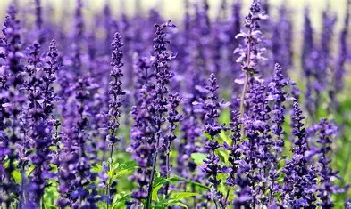
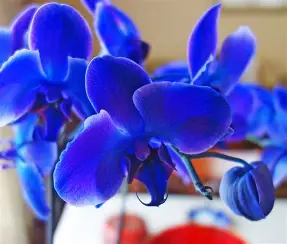

Plantas em Destaque

Rosa
Rosa spp.
Flor símbolo do amor e da beleza, com variedades em diversas cores e fragrâncias.
Girassol
Helianthus annuus
Planta que segue o movimento do sol, conhecida por suas sementes nutritivas.

Lavanda
Lavandula angustifolia
Planta aromática conhecida por suas propriedades relaxantes e medicinais.

Orquídea
Orchidaceae
Família de plantas com flores exóticas e elegantes, muito apreciadas na decoração.

Ipê Amarelo
Handroanthus albus
Árvore brasileira que floresce no inverno, símbolo da chegada da primavera.